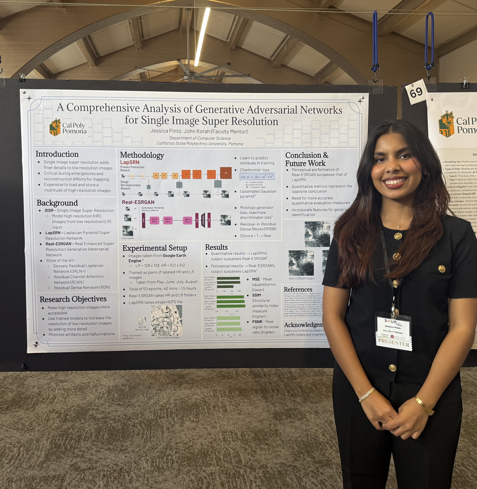

Research

Edge Computing
As the world moves towards further automation, there is much to gain from utilizing machine learning models to support decision making. In the agricultural domain, where satellite images have the potential to provide a multitude of information about crop health, disease spread, and disaster management, deep neural networks can prove to be particularly useful. Unfortunately, these images cannot be utilized to their full potential because high resolution images are costly and difficult to access but low resolution images lack the necessary detail needed for accurate analysis.
My research focuses on deep neural networks that assist with single image super resolution. The application of deep neural networks for this task diversifies its use and makes largely available high resolution data, with textures and details that can be used in a variety of applications, such as urban planning and crop monitoring and analysis.
In particular, I have been working with a type of deep machine learning architecture called Generative Adversarial Networks, also known as GANs. Throughout my research, I have analyzed the performance of GANs in comparison to other single image super resolution (SISR) models, including the Laplacian Pyramid Super Resolution Network (LapSRN) and Laplacian Generative Adversarial Network (LAPGAN).
Conferences
Southern California Conferences for Undergraduate Research (SCURR) 2025
At SCCUR 2025, I had the opportunity to showcase my research in single image super resolution models alongside undergraduate researchers coming from a multitude of domains. From biologistis and chemists to mathematicians and engineers, I gained valuable experience presenting my research in a professional setting, listening to feedback, and building essential research skills.
Read my research paper on A Comprehensive Analysis of Generative Adversarial networks for Single Image Super Resolution
View my poster in detail here
Presentations
Please click on any of the following thumbnails to view the presentation in detail.


Technology and Health
The increase of processed food consumption has brought with it a variety of negative health impacts, with the most significant growth in Obesity rates. Obesity treatment at early stages can mitigate some of the more dire consequences of heart disease and diabetes, an application our artificial intelligence model is geared towards. Using an Artificial Neural Network, our project analyzes an individual's physical traits, lifestyle, and family history to determine whether an individual is likely to be diagnosed with Obesity, and specifies the severity of the illness.
Read the research paper on Deep Learning for Public Health: Predicting Obesity with Neural Networks
Cybersecurity
As the internet becomes an increasingly omnipresent aspect of our lives, it is important to consider the implications of cloud technologies and its ubiquitous use. Our research delves into the complexities of cloud computing in the cybersecurity realm and the vulnerabilities that may cause unintended ill affects.
Read the research paper on Cloud Computing and Its Cybersecurity Concerns
Please click on the thumbnail below to view the presentation in detail.
Technology and Society
Home-bound delivery services have created an environment in which people no longer need to leave their homes for almost anything they need. From gas to groceries, delivery services are making lives easier--especially post pandemic--however, the increased reliance on such services can have detrimental effects on hyper-dependent users. This paper analyzes the impact of growing home delivery services, and how they have changed the human lifestyle post COVID-19.
Read the research paper on The Cost of Convenience
Music and Technology
With new advancements in audio technology, digital music production has become accessible to a wider range of individuals, one only requiring a phone or tablet to create and produce their creations. However, these same advancements equip artificial intelligence models with the ability to do the same, and are a means of acquiring samples without the costs associated with human artists and producers. This paper explores how audio technology is providing new opportunities for the underprivileged while reducing the human variable in the equation.
Read the research paper on The Impact of Advancing Technology on Digital Music Production